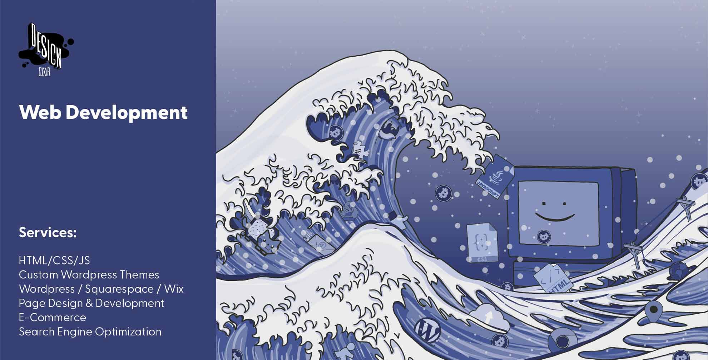
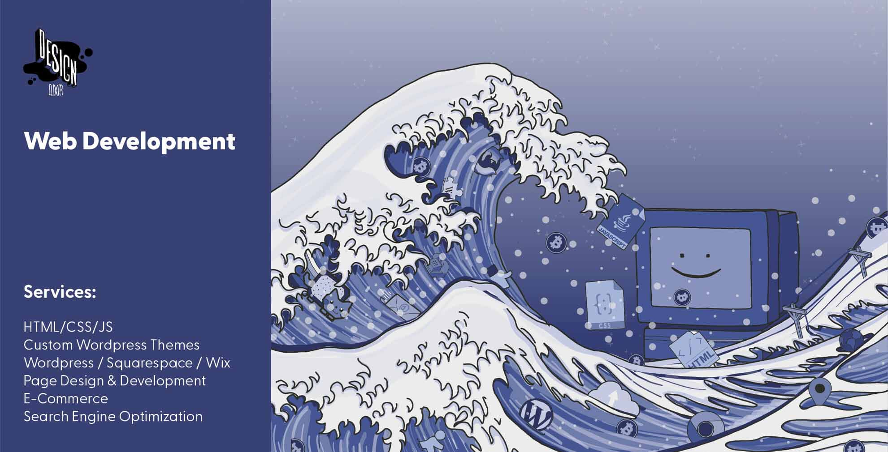
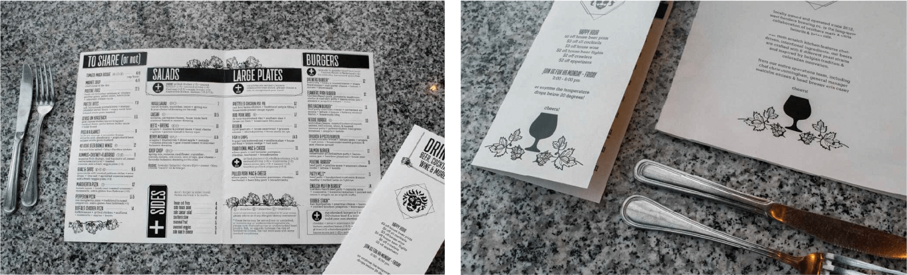

hi :-)


 



Contact Me
To: yourbeautifulface@email.com
From: megan@designelixir.studio
Subject: Let's Chat!
I'm always looking for great businesses to partner with, and a new challenge to tackle. Contact me at megan@designelixir.studio for any questions or inquiries.
I've got a vibrant web presence, the internet is my favorite thing after all. Check out my code, attempts at photography, illustrations, work history and more.


Projects Quickview

Twin Lakes Store-Web Design
Revamp the website for a historic, 141-year old mountain general store with a clean layout.

Vans Ultrarange Project-Product Photos
Capture product photos and videos for social media to promote Vans UltraRange sneakers.
Renu Beauty-Logo Design
Create minimalist logo options for home-made skin care products.
Tribal Fitness-Branding & Web Design
Create a bright & welcoming brand & website to express the energy of Tribal Fitness's community.

Kat's Script-Custom Typography
A script font face inspired by the handwriting of my friend, Kat Hebda.

Debra Austin, JD, PhD-Web Design
Design and develop a website for Professor Debra Austin to house her research articles & blog.

West Flanders Brewing Co-Menu Redesign
Design a new menu layout focused on user-experience and clean design.

Northern Wild -Sticker Designs
Illustrated sticker designs for the Northern Wild - a girl and her samoyed.

University of Colorado-Web Design
Build a website for Class of '20 with keynote speeches and a gallery of 300+ students.

Civico -Brochure Designs
Help transition a political group's brand from old to new with fresh layouts for informational brochures.

Killa Nilla-Album Artworks
Design album covers for dubstep artist Killa Nilla.
The Miller Bros-Sticker Designs
Design colorful stickers for two brothers and their VW Westfalia.
Boulder Baja-Logo Design
Create a logo for shirts and to embellish CU Boulder's BAJA racing team vehicle.
About Design Elixir

I’m an all-in-one, one-woman creative studio, specializing in web development, graphic design and illustration. I believe great things come from great connections, and serving small businesses and entrepreneurs enables powerful relationships rooted in a collective, passionate vision.
My insatiable urge to create combined with infinite power of computers enables me to provide a diverse set of services perfect for entrepreneurs and small businesses. I specialize in catering my artistic tools to your creative vision and capturing the spirit of amazing individuals. Like you!
Megan strives to learn a little something about everything. Raised on the Colorado Rockies, you can find her on alpine trails dancing like nobody’s watching. She finds inspiration everywhere, but especially in wild flowers. In case you were wondering what Megan’s done on any given day since May 23rd, 2013, she can pull up a journal entry from any day from then to now. Within these pages you’ll find a drive for new skills and experiences that never sleeps. Whether it be coding, painting, fly-fishing, growing a garden or cooking a mean ribeye steak, Megan is curious and eager to tackle challenges head on.
About This Site
This site is 99.24% images, all of which were either hand-drawn
or photographed by me. Even the icons!
This site couldn't have been completed without the help of my best friend
Korey, my right hand woman for brainstorming.
A special thanks to Hudson for teaching me how to properly use GitHub
(kinda), to Nikka, for polishing my designs, and to Spencer, for
motivating me throughout the 7 months this project took.
Hello World, I'm Megan Byers and this is Design Elixir!
fatMia.jpg
miaAndI.jpg
March '20
Tools: Illustrator
Following the two-year production of a documentary showcasing the spirit of the open road, Camden & Spencer Miller (Miller Bros) prepared to submit their premier film “The Comfort Zone” to festivals across the world. To supplement their message of authentic and unique storytelling, I crafted colorful, organic illustrations based around the places visited in their baby blue 1982 Volkswagen Westfalia, Lars.

Camden and Spencer Miller sit in Lars.
After collaborating with the Miller Bros and pulling scenes from photos and videos of their trip, I could sum the majority of their travels to deserts, mountains, coasts and forests. I researched the color of their Volkswagen bus and built color palettes off of this basis, and sketched multiple angles of Lars.


The variations were developed in SVG format, so that the designs could be scaled to any size without losing quality. This allowed them to use any design for not only their logo and stickers, but in the future for t-shirts and embroidered hats.


Megan was a joy to work with! She truly brought our vision to life and helped us design logos, stickers, and apparel that have revolutionized our brand. She was very engaged and involved throughout the entire process, and helped us cultivate our vision to a place that surpassed the ideas we brought to the table. Megan is innovative, savvy, and professional; she is an artist in its purest form! We will be using Design Elixir for any design needs in the future, and wholeheartedly recommend her to anyone looking to add a distinct character to their brand.
-Camden and Spencer Miller, The Miller Bros

August '20
Tools: Wordpress, WooCommerce
The first batch of Doc’s Hemp RX CBD was manufactured to help its founder’s mother, “Doc”, relieve symptoms of Parkinson’s. Since seeing the immediate benefits of CBD and CBN as a natural remedy, the mission of Doc’s Hemp RX has stayed true - creating high-quality, organic and affordable hemp products for those who need it most.
The Doc's Hemp RX website was designed to match existing packaging.
The site needed to be easy to use and invite customers with a variety of ailments to try high-quality hemp products with simple, organic ingredients. Designed with fonts, coloring, and graphic elements parallel to the existing vintage-style packaging, Doc’s Hemp RX website stands out against the typically industrial layout of other hemp product websites.
Working with Design Elixir has truly been a great experience. Megan manages her time very well, and is by far the most dedicated web designer I have come in contact with. Design Elixir client for life.
-Trent Bailey, Doc's Hemp RX founder
August '18 - January '20
Tools: Illustrator, InDesign, Lightroom, Squarespace
Located on historic Pearl Street in Boulder, Colorado, West Flanders Brewing Company is a local Belgian-inspired restaurant and brewery. The in-house brewing equipment lined amongst industrial brick and Edison era bulbs emits a cozy, timeless and genuine aesthetic.


Photos captured by me for West Flander's website and advertisements
Using their existing logo, I expanded their brand by developing graphic elements and layouts to create consistency in their marketing and content by pulling inspirating from the unique interior of the restaurant, creating graphic elements of brewing equipment, hops and even employees with simple, bold line drawings.


A sampling of advertisements, coupons and posters created over my two years with West Flanders.
After observing hundreds of customers struggle to navigate the West Flanders menu, I began to rework the layout to be more user-friendly. I made the menu foldable versus single page for easier viewing, improved menu flow by organizing sections, adding happy hour information and incorporating new branding measures.

Megan played many roles at West Flanders, from busser to waitress, and finally as our graphic designer. Her involvement with every day operations gave her great insight into customer user experience, and she took the initiative to redesign our menu after seeing the flaws in our current layout. She helped our restaurant find an identity after 5 years of unorganized marketing, and designed an aesthetic that helped us stand out in a state with hundreds of craft breweries. We could count on her to meet deadlines and create content, often with only a few days notice. I highly recommend Megan for all graphic design needs.
-Malcolm Emison, General Manager at West Flanders Brewing Company
October '17
Tools: Photoshop, Lightroom
Following a 486-mile backpacking trip across the Colorado Rockies in a pair of Vans Hi-tops, I was commissioned by Vans to take photos and videos for their new line of UltraRange sneakers. This new line of sneakers expanded Vans into the outdoor industry by boasting durability and versatility for a variety of different environments, which I showcased during the fall season in the San Juan Mountains, Colorado.

Skating in the Black Canyon of the Gunnison with a makeshift selfie stick for my GoPro.
These videos were montaged with other Vans Ambassadors work in a 15 second advertisement displayed on Instagram. The ad recieved over 3.8 million views and featured 4 snippets of my videos adventuring through the mountains of Gunnison and Crested Butte, Colorado. High resolution photos were used for a promotional Instagram post.


Photos captured by me in Vans UltraRange sneakers post and advertisement featured on Vans Official Instagram in March of 2018.
July '20
Tools: Squarespace, Illustrator, Photoshop
Tribal Fitness is a vibrant community of athletes ranging from beginner to professional looking to improve their fitness. Owned and operated by personal trainer April Riggins, Tribal Fitness strives to teach others her approach towards health - building long-lasting habits that make you feel great.
The Tribal Fitness brand was designed from scratch, with a website to match.
Using the basis of her Hawaiian heritage as a baseline to build the brand, I developed several sketches of sharks (April’s favorite animal) in tribal style. I focused on bright, energetic colors and design elements that invited any and all to join her fitness community, while tying to a tropical theme.
From initial page design to setting up her domain and E-Commerce, the site was designed for quick and easy access to the Tribal Fitness mission, available fitness packages, and April's impact on her clients. I designed multiple colorful 'product photos' to share information on her programs, and accented the website with design touches like her signature and wave details to fully emphasize the personality of Tribal Fitness.
Product photos designed for the Tribal Fitness online store.
Megan did a wonderful job at designing my website! She was super responsive and had so many ideas I myself didn’t even think about. Also her logo design was exactly what I pictured in my head. She went above and beyond the time and effort she put into the website and the outcome was more than I could’ve asked for! I would 100% work with Megan again and will recommend her to anyone looking to build a website!
-April Riggins, Tribal Fitness
February '20
Tools: Wordpress, WooCommerce, Illustrator
Amidst 14,000-foot peaks, Colorado’s largest natural lakes and the United State’s longest backpacking trail resides the Twin Lakes General Store, an alluring and essential stop to travelers for over 100 years. Run solely by Bob Mathes and his shy golden retriever Motu, I completely revamped their site to a clean, easy-to-navigate home base for everything Twin Lakes, with touches of character to honor the marvels of the beautiful mountain town.
The Twin Lakes General Store website is responsive on all devices.

Featuring hand-illustrated touches, paired with striking images and bold red elements to parallel the bright red paint of the store building, this site is intended to exude the personality of a historically rich spot while providing a modern, youthful approach to business.


Footer illustration featuring the highlights of Twin Lakes, Colorado

Bob & his golden retriever, Motu.
Megan has been a great asset to my small business by helping us transition away from an out-of-date website and social media we inherited from former owners. From great concept and design, tech fixes and consulting, art, photography, and helping get an online shopping platform built. I’ve never seen someone be so engaged and work so hard, and recommend her for any sized project!
-Bob Mathes, Twin Lakes General Store & Mercantile Twin Lakes, Colorado